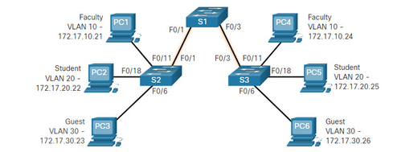
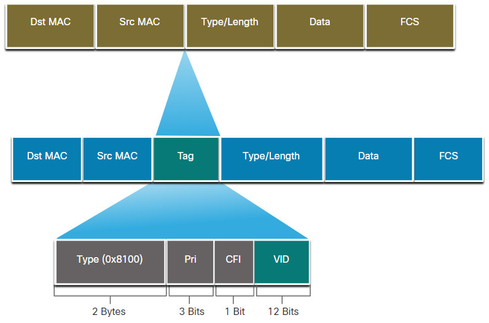

Chapter 3 - VLANs
VLANs in Multi-Switched Environment
Defining VLAN Trunks
VLANs would not be very useful without VLAN trunks
VLAN trunk allow traffic between switches
devices in same VLAN on different switches can communicate with each other
trunk is point-to-point link between two network devices that carries more than one VLAN
VLAN trunk does not belong to the specific VLAN

VLAN Identification with a Tag
When Ethernet frame is placed on the trunk, info about the VLANs to which they belong must be added (switch add it) —>
process is called tagging (4-byte number inserted within the original Ethernet header. It specifies the VLAN to which the frame belongs.
